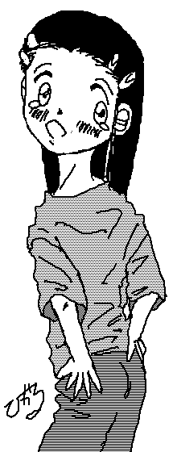

ミラーリングシリーズ第０．５話
鏡の指輪のアリス
本作品は、
この度、共通設定世界として提案した
「ミラーリングシリーズ」の
サンプルストーリーとして、製作したものです。
Ｂｙ：ことぶきひかる＆ＮＤＣセキュリティサービス
脱ぎ捨てられたジーンズから、いきなりスターウォーズのオープニングが流れ始めた。
勝義の平穏な土曜の午後の憩いを破壊したのは、携帯電話の呼び出しメロディだった。
モニター部を見ると、「橘 恵 携帯」の文字が表示されている。
橘 恵とは、勝義の恋人の名前だ。
そして、こんな時間帯にかかってくる彼女の電話の内容はろくなものであったためしがない。
とはいえ、ここで、でなければ、後で、更に非道いことが待ちかまえていることだろう。
勝義は、渋々と携帯のボタンを押す。
「はい、勝義だけど。」
「あ、勝義？もっと早くでてって。」
こちらの都合など、全く考えている様子などないその声は、恵に間違いない。
「時間がないから、用件にうつるけど、勝義。この前、書いてもらった脚本のこと、覚えてる。」
厳密には、勝義は、脚本は書いてない。
手書きの状態から、ワープロで清書しただけだ。
ことの起こりは、つい最近になって完成した市の文化センターの完成式典のことだ。
当然、市やら県やらのお偉方が来て、文化センターとは全然関係ない話をすることは決まっていたが、やはり建築物の目的上、それに相応しいこともしなければならない。
そこで、市内の学校やら、サークルやらに声がかかり、発表会を開こうと言うことになったのだ。
恵の参加している演劇サークルも、その発表会に参加することになった。
これまでは、公民館や体育館など、間に合わせの舞台と設備でしかやったことがないサークルだったが、文化センターには、音響照明共に、かなりのものが揃っていた。
これは出るしかない。
だが、演劇のサークルだけに、どうやら、文系人間ばかりらしく、ワープロを使えないわけでもないが、縦書きとか、脚本形態にまとめることができなかったようなのだ。
結局、恵の強引な押しにより、勝義は、３日がかりで、手書きの原稿から、ワープロで清書することになったのだった。
その発表会は、明日に迫っていた。
「その脚本の劇のことなんだけど、１人が、急な用事で、明日これなくなっちゃったのよ・・・」
急な用事でこれない・・・その言葉に、勝義の脳裏に嫌な想像が浮かぶ。
「おい、まさか、おれに代役やれっていうんじゃないだろうな？」
「う〜ん、そうできれば、一番いいんだろうけど、その役の子って、女のコなのよね。」
女のコのという言葉に、勝義は、ほっと胸をなで下ろした。
いくら恵でも、女のコの代役を、自分にやれとは言わないだろう。
安心したためか、今度は、公演そのものの行方が気になった。
台本の清書などを自分に押しつけたとはいえ、演劇にかける恵の情熱には、常に圧倒されていた勝義だった。
そして、その情熱こそ、勝義が恵に引かれている最大の理由だろう。
「って、どうするんだよ。公演明日なんだろ。今から、代役を見つけたって、セリフとか覚えるだけで、精一杯で、とても稽古どころじゃないだろ。」
「それについては、ちょっと良い考えがあるの。だから、勝義、ちょっと手伝ってくんない？」
こういう状況下での良い考えというのが、ロクなことでないことを、勝義は、経験から、よ〜く知っていた。
とはいえ、ここで手伝えないと言う返事ができないことも、勝義は、経験から、よ〜く知っていた。
「分かったよ・・・で、なにをすればいいんだ？」
「今、練習場にいるの。すぐ来てくれない？」
行けないという返答ができないことは、分かり切っていた。
サークルの練習場である、公民館に、勝義は到着する。
「遅いよ、勝義、早く来て早く来て。」
勝義の手を引っ張り、中へと連れ込む恵。
「おい、おれに一体何をしろって言うんだ。」
「まずは、この部屋に来て。」
公民館の一番奥の部屋・・・狭苦しいその部屋に押し込められるように連れてこられた勝義。
「おい、こんなとこで、一体なにを。」
「いいから・・・ところで、勝義。例の脚本の中身、まだそれなりに覚えてるよね。」
「あ・・・ああ・・・」
清書後、何度も、校正をしたため、全体的な流れや主立ったセリフは、かなり覚えてしまっていた。
「この指輪。目をつぶったまま、指にはめて。」
恵が、ポケットからだした銀色の指輪を差し出して見せた。
「指輪・・・また、なんで。」
「いいから、はめて。」
渋々ながら、勝義は、指輪に指を通しながら、目をつぶった。
はめた指輪が、指の根本まで届いた感触。
「おい、はまったぞ、この後、どうするんだ？」
「あ、ちょっと、そのまま、目をつぶってて。」
恵に言われるままに、目をつぶり続ける勝義。
ぎぃっとドアがきしむような音がした。
「はい、目をあけていいよ。」
恵の声に勝義はうっすらと目を開ける。
目の前のドアが、小さく開いていた。
「ちょっと、そこから、中を覗いてみて。」
言われるがままにドアの隙間から、その向こうを覗き込むと、部屋の中には、１０歳くらいに見える女のコが座っていた。
見覚えがある。
確か、今回、「不思議の国のアリス」で主役を受け持った真穂ちゃんというコだ。
舞台背景や大道具を造るのを手伝わされた時、何度か、会ったことがある。
「すみません・・・急に、こんなことになっちゃって・・・」
真穂ちゃんが、なにかを謝っている。
どうやら、相手は、サークルの代表らしい。
先ほどから、なにか、服がこすれるような感触があったちょっといらいらするが、今は、話の内容が気になる。
「気にしなくていいよ。お葬式じゃしかたがないから・・・」
「けど・・・明日の舞台、どうするんですか・・・」
「今、代役のコ探している。だから、安心していいよ。」
そこで、ばたんとドアが閉められた。
どうやら、明日これなくなったというのは、主役の子らしい・・・
お葬式となれば仕方がないが、代役はどうするのだろう。
今から代役を見つけても、セリフとか覚えるだけで大変なことだ。
「おい、恵、で、どうするんだ・・・ええ？！」
事の次第を確かめようと、恵に話しかけようとした勝義は、想わず声をあげてしまった。
特に、何もしていないはずなのに、その声は、いつもの自分の声ではない。
まだ、声変わりしていない子供のような、甲高く、そして、どこか舌足らずなはっきりとしない声。
「どど、どうなってんだ・・・」
狼狽えた声もまた子供のような声だ。
本能的に、勝義は、恵の方へと振り向いていた。
自分の身に降りかかった異変に、誰かに助けを求めずにはいられない。
「め、めぐみ・・・」
だが、振り返ると、いつの間にか、恵の手には、３０センチ４方ほどの鏡が握られていた。
「さ、見てみて。」
恵が、その鏡を、勝義へと差し出して見せた。
本来なら、自分より背の低い恵の胸の高さに置かれた鏡を、かがみこんでもいないのに、正面から見ることができたことを、勝義は気づかなかった。
そして、その鏡に映し出されていたのは、見慣れた自分の顔ではなく、先ほど見たばかりの真穂にそっくりな少女の姿だった。
「な、なにい？！」
あがった悲鳴は、先ほど同様、子供の声だ。
そして、鏡の中の真穂の顔が、驚きに、ひっくり返っていた。
それじゃ、この鏡に映っている姿・・・真穂そっくりな子が、今のおれか？！
慌てて視線を下に向ければ、先ほどまで着ていたシャツが、ダブダブになっていたし、はいていたチノパンは、辛うじて、お尻に引っかかっているという有様だ。
両足も靴のなかで、だぼだぼ状態。
おそるおそる両手を、視線の高さまで持ち上げると、それは、小さく細い子供の手だった。
そして、そこから伸びる腕もまた細く華奢だ。
「ど、どうなってるんだよ。めぐみー！」
「今、勝義は、真穂ちゃんに・・・真穂ちゃんそっくりの・・・本人同然なんだけどね・・・なってるの。」
「真穂ちゃんに・・・おれがかあ？！」
「そう、さっき、はめてもらった指輪、ミラーリングっていうの。あれの力でね。」
「みらーりんぐ？」
「そう。この指輪をはめてね、最初に見た人に変身できるってアイテム。見つけたのは、ずいぶん前になるんだけど、想わぬところで役に立つもんね。」
「役に立つって、オレに何をやらせる気だあ！？」
「え、まだ、分からないの？もちろん、真穂ちゃんの代役。これなら、真穂ちゃんに合わせて造った衣装も無駄にならないし。」
「代役って、さっき、おれには、やらせないって電話で。」
「うん、勝義は無理だから、真穂ちゃんそっくりな子に頼むことにしたの・・・」
そのそっくりな子っていうのは、すなわち自分のこととじゃないか。
矛盾点を指摘しようと想った勝義だったが、あえて、言わなかった。
「指輪を付けて最初に見た人間にしか変身できないから、真穂ちゃんがここいる間に、勝義に来てもらわないといけなかったの。
どうにか、間に合って良かったわあ。」
「誰でも変身できるんなら、おれでなくても、他にやれる人がいるだろ。お前だっていいはずだし。」
「ダメだって、あたしには、別の役があるし、勝義を代役として、みんなに紹介しなくっちゃいけないでしょ。
他の人も、みんな役目が決まってるし、だいち、脚本の内容を知ってる人じゃないと。
それに、この指輪のことは、あまり、人には知られたくないの・・・まあ、勝義なら知られても、口止めできそうだったし。」
恵の言葉に、勝義は、がっくりと、小さな肩をおとした。
「公演が終わったら、ちゃんと元に戻してあげるから、安心して。もちろん、協力してくれればだけど・・・」
最後の一言に、勝義は震え上がった。
これでは、遠回しの脅迫だ。
とはいえ、今の勝義に選択肢はない。
「分かった。けど、ちゃんと、元に戻れるんだろうな。」
「勝義が変なことさえしなければ大丈夫。それより、着替えないと。」
「着替え？」
「だって、今の格好じゃ、人前に出れないでしょ。それに、舞台での稽古を、しないで本番というわけにも行かないし。」
確かに、本来は男物・・・それも、こんなダブダブの格好では、人前に出るどころか、歩くことさえままならない。
恵が用意したのは、真穂の練習用の衣服らしい。
黄色のＴシャツに黒のスパッツ。
そしてスニーカー。
Ｔシャツはともかく、スパッツをはいてみると、小学生とはいえ女のコの身体のライン、特に、小さなお尻から細い脚までが浮き彫りになってしまい、かなり恥ずかしい。
それに、トランクス派の勝義としては、この腰と臀部全体を覆うような密着感が、どうにも落ち着かない。
「やっぱ、外見は真穂ちゃんだけに、可愛いなあ・・・」
目を細めながら、恵が呟く。
「お前なあ・・・」
恥ずかしさと密着感に、どうにも落ち着かない勝義は、恵を睨み付けた。
「ふ〜ん、格好は真穂ちゃんでも、中身が違うと、ずいぶん別人にみえるものね・・・けど、なんか、お転婆な女のコみたいで、可愛い！」
いきなり、恵は、勝義のことを抱きしめた。
「うわ？！」
小学生の体格と力では、いくら女性とはいえ、大人にはかなわない。
「あ〜ん、可愛い可愛い！」
首を左右に振りながら、恵は、更に勝義をぎゅっと抱きしめる。
「め、めぐみぃ・・・く、苦しいって・・・」
「あ、ごめんごめん。」
慌てて、恵は、抱きしめる腕を緩めた。
「ふにゃ〜・・・人を窒息死させる気かよ・・・」
「ごめんね。けど、ホントに可愛かったんだもん。」
まだ、名残惜しそうに呟く恵。
勝義は、もはや、完全に、ぬいぐるみ扱いだ。
「代わりの子、みつけてきたよー！」

恵に引っ張られるようにして、女のコの姿の勝義は、ステージの上にあげられた。
「え・・・このコ、真穂ちゃんじゃないの？」
「よく似てるでしょう。探すの大変だったんだから。」
大変なのはこっちのほうだよ。と勝義は想ったが、口には出せない。
「けど、この子なら、体格も真穂ちゃんと変わらないから、衣装の方も問題なさそうだし・・・ところで、名前は？」
「あ、あたしの従妹で、えーと、か・・・そう香織ちゃんっていうの。」
即興で、名前を考え、慌てて紹介する恵。
勝義も、やむなく、こくんと頭を下げる。
「ところでセリフとか大丈夫なのかい？」
「あ、それは、大丈夫です。香織ちゃん、うちに遊びに来たとき、何度か、練習につきあってもらったりしたんで・・・」
「へえ、それは、心強いなあ・・・じゃあ、稽古、始めるぞ。」
本番は、もう明日に迫っていた。
急な代役が入った以上、それに合わせて、多少は、まわりがサポートできる体勢も造って置かねばならない。
明日が本番だけに、万が一でも、なにかあったら困るため、私服や布きれ、髪などを活用した仮衣装で、最後の練習が始まった。
勝義も、布きれを腰に巻いた簡易スカートで、練習することになった。
台本の中身を、全て覚えていられるはずもなかったが、全体的な流れや、主立ったセリフは掴んでいた。
最初の通し稽古で、なんとか、骨組み的な形は整った。
「よおし、ちょっと休憩だ。」
サークル代表の声に、メンバーは、それぞれ、椅子を引っぱり出したり、買い置きのジュースを持ち出す。
「香織ちゃん、なにがいい？」
サークルの女性の１人に聞かれ、勝義は、どう応えたものか、一瞬、つまる。
「オレンジジュースでいい？」
「は、はい。」
「はい、どうぞ。」
プルトップをひきあげ、口に含む。
味覚まで、子供になってしまったのか、いつもより、酸味がきつく感じられる。
むせそうになるのを押さえながら、ゆっくりとジュースを口にした。
「香織ちゃん、なかなか上手ね。なにかやってたの？」
メンバーのなにげない質問に、勝義は、再度、むせそうになる。
「え、え・・・え、別に何もしてないです。その・・・友達と、遊びとかでやったことはあるけど・・・」
「ふ〜ん・・・香織ちゃん、けっこう素質あるんじゃない？ねえ、うちのサークルに入ってみない。」
その提案に、三度、むせそうになる勝義。
「だ、だめですよ。お・・・あたし、全然、そういうのだめなんです。」
「そうかなあ・・・才能あると想うんだけど・・・」
「よおし、練習、始めるぞ。」
危ういところで、代表の声が響いた。
ぞろぞろと立ち上がり始めるメンバー。
勝義も、慌てて立ち上がろうとしたところで、簡易スカートが脚に絡まって転びそうになってしまった。
疲れが残ってもまずいということで、７時を少しすぎたあたりで、練習はうち切られた。
「なあ・・・明日の舞台は、ちゃんと代役やるから、元に戻してくれよ。」
どこか、もじもじとした素振りで、恵に懇願する様は、いかにも、小学生の女のコらしい愛らしさに溢れており、恵の目が細まる。
「そうも、いかないわよ・・・勝義を信用しないわけじゃないけど、真穂ちゃんが、もうここにいない以上、元に戻られたら再変身ができないの。明日、公演が終わるまで、ガマンしてね。」
「え〜、そんなあ・・・」
まるで、楽しみにしていた旅行が中止になってしまった時の子供のような口調で、勝義は呟く。
「おれ、親と同居してんだぜ。こんな格好じゃ、家に帰れないよ。」
「あたしの部屋に泊まればいいじゃない。あ、そうだ。そのまま、細かい部分、練習しちゃおうか。」
「え、お前の部屋？」
「うんうん、それがいいわね。」
勝義の意見も聞かぬまま、一方的に恵は、段取りを決めてしまった。
「じゃあ、着替えなきゃね。」
「え、着替えるって・・・」
「稽古着のまま、帰すわけにもいかないでしょ。」
「え、いいよ。このままで・・・」
「だめだめ。だいち、汗、かいてるじゃない。」
恵は勝義を掴まえると、あっという間に、Ｔシャツを脱がしてしまう。
「ひゃ、ひゃあ！」
まだ、少女以前の女のコとしかいえないような体型とはいえ、無理矢理脱がされたら恥ずかしいに決まっている。
いくら、ぺったんこな胸だからって、裸にされては恥ずかしくないわけがない。
「さ、これに着替えてね。」
恵が差し出したのは、セミスリーブのワンピース。
特に、フリルもレース飾りもないシンプルなデザインのものだが、勝義の男の意識は、スカートをはくという行為そのものを拒絶せずにはいられない。
「こ、これをか・・・」
「いやなら、もっと可愛いのあるけど？」
もっと可愛いのという言葉の示すものは、勝義でも想像するに容易いことだった。
「これでいい・・・」
渋々ながら、同意する勝義の様は、２着のお気に入りの服の中から、断腸の思いで１着を選んだ少女を思わせるものがあった。
はいてみて、スカートというのは実に不思議な衣服だということを、身をもって体験することになった。
服を着ているにもかかわらず、下半身に直接風が吹き込んでくる・・・風なんか吹いていないにも関わらず、吹いてくるような気がする・・・この感触は、落ち着かないことこの上ない。
「あ、スパッツも脱がなきゃダメよ。」
「え、これもか・・・勘弁してよ・・・」
勝義は今にも泣き出しそうな表情になっていた。
「だって、このワンピースにスパッツって似合わないじゃない。」
先にそう言われてしまっては、反論のしようもない。
やむなく、勝義は、スパッツを脱ぐ。
「さあ、これでいいのかよ。」
スパッツがないせいで、腰のスースーは５０パーセント増（当社比）だ。
とはいえ、これ以上、落ち着かない様を見せたら、恵に何をされるか分からない。
恥ずかしさをひたすら押し込めて、恵に応える。
「う〜ん、可愛い！じゃ、帰りましょうか。」
これで、少なくとも、サークルのメンバーの視線からは逃れられる。
そう想った勝義だったが、それは余りにも甘すぎる見通しだった。
幸いと言うべきか、行程のほとんどが、恵の車の中だったため、ワンピース姿を人には見られずに済んだ。
アパートにつくと同時に、恵の部屋へと駆け込む。
後ろで、ドアの閉まる音を聞き、勝義は、やっと一息をつくことができた。
「今、お風呂入れちゃうから、ちょっとまっててね。」
「え・・・ふ、風呂はいいよ。」
「だめだって。あれだけ汗かいたんだから。女のコの、清潔にしなくちゃね。明日の公演のこともあるし、キレイにしとかなきゃ。お風呂入れてる間に、夕ご飯にしましょうか。」
正直な話、恵の料理の腕は、決して悪い物ではない。
今夜のメニューは、ミートソースのパスタにポテトサラダ。
いつもは、なにも問題ないはずのメニューだったが、食べる口とフォークを持つ手が小さくなってしまったためか、どうにも食べづらい。
「ほら、ほっぺに、ソースついてるよ。」
いきなり、恵が紙ナプキンで、頬を拭う。
ミートソースが頬についてしまったのも恥ずかしいが、それを拭われてしまうのは更に恥ずかしい。
散々恥ずかしい目に遭いながらの食事の間に、浴槽にお湯が溜まった。
「やっぱ、お風呂入らないとダメ？」
許しを請うように、恥ずかしいのを我慢して、恵に聞いてみたが、始めから、その気だったのだろう。
恵は、意地悪な笑みを浮かべながら、首を縦に振る。
アパートの浴室と浴槽だけに、決して広いものではないが、女性である恵と、今は子供になってしまった勝義なら、どうにか、一緒に入ることができた。
「う〜ん、やっぱり子供の肌って違うわねえ・・・つるつるのぴかぴか・・・羨ましいなあ・・・」
勝義の背中を洗いながら恵がしみじみと呟く。
そんなに羨ましいなら自分が真穂になれば良かったのに。
そう想った勝義だったが、やはり口には出さない。
シャンプーの後、トリートメントまでされ、全身を丹念に洗われた後、お風呂から出て、これでようやく終わりかと想ったら、ドライヤーをかけられながら、丹念に髪を梳かされる。
寝ている間に、髪が絡まないようにと、左右に分けられ、輪ゴムで止められてしまった。
これまで、髪を伸ばしたことのないない勝義にとって、髪が左右に引っ張られるため、顔の皮膚もひっぱっれる様なこの感触は、ひどく落ち着かないものだった。
「う〜ん、ネグリジェかパジャマ、用意しなかったのは失敗だったわね。」
さて、子供は早く寝よう。ということで、布団を敷いた恵は、少々残念がっていた。
今の勝義の格好は、普段来ているＴシャツ・・・なのだが、やはり１０歳の女の子には大きすぎる。
どうみても、スモックにしか見えない。
もっとも、それはそれで可愛らしいものだったが。
「明日は本番なんだから、早く寝ましょ。」
左右に縛られた髪が、寝返りを打つたびに、邪魔になるため、なかなか寝付けない。
（う〜、なんで、こんな目に遭うんだよ。おれ、そんな悪いことしてないはずなのに〜。）
無論、彼の心の叫びに応えてくれるものはいるはずもない。
 「それじゃ、あたし、香織ちゃんの準備するから。」
「それじゃ、あたし、香織ちゃんの準備するから。」
他のメンバーにそう告げると、恵は、勝義を更衣室に引っ張り込んだ。
「さ、着替えて着替えて。」
恵に急かされ、勝義は、用意されていた舞台衣装を手に取った。
不思議の国のアリスの衣装だけに、もちろんエプロンドレスだ。
可愛い女のコが来ているのを見る分には、むしろ心が和むものがあるが、自分が、それを着るとなれば話は別だ。
今の自分の外見が、１０歳の少女だと分かってはいても。
ピンク色のパフスリーブのワンピースには、舞台衣装ということで、既にフリル満載のエプロンが縫いつけられている。
勝義が、エプロンドレスに袖を通すと、すかさず恵は背中のボタンを留め、リボンや襟を整えた。
もちろん足下は折り返しの白のソックスに、黒の革靴だ。
「さ、座って。」
勝義を、鏡の前に座らせると丹念に髪を梳いた上で、髪型を整え、リーフパターンのカチューシャをはめる。
これは、舞台の上で外れることがないよう、ピンで留められるようになっていた。
「さ、後はメイクね。」
「え、化粧するのか？」
「今回は、客席かなり広いし、照明も強いから、それに合わせて、映えるようにしないとね。あ、もちろん、子供だから、そんなにケバいメイクはしないって。」
慣れた手つきで、恵はメイクを進めていく。
最後に、ピンク色のリップを塗って完成。
「さあ、できた、我ながらいい出来。やっぱり素材が違うと、出来も違うもんねえ。」
その素材は、鏡をみて、唖然としていた。
昨日の午後から、唖然としたこと数え切れないが、これもまた唖然とするしかなかった。
ピンクのエプロンドレス姿の少女の姿がそこにあった。
もちろん、その服装は、その少女によく似合っていた。
長く伸びた黒く光沢のある髪は、クセもなく、艶やかだ。
アリスという少女を日本人にしたら、こうなるんではないか。
そう想わせてしまうような愛らしさがそこにあった。
目鼻立ちに多少メリハリをつける程度の化粧も、この少女が、少しでも大人に見られたいと一生懸命背伸びをしているようで、愛らしい。
だが、問題は、この少女が自分だということだ。
これが、あくまでも、自分の見た誰かなら、いいのだが、それが自分の身となれば、恥ずかしさ爆発だ。
しかも、これからこの格好で舞台に立たなければならないと来ている。
「なあ、恵・・・どうしても、やらないとダメ？」
恵は、無情に、首を縦に振る。
その様に、勝義は最後の賭けに出た。
最後の望みをかけて、全ての羞恥心を抑え込み、人生における最高のできではないかと想われる演技に出た。
「恵・・・お姉ちゃん・・・あたし、やっぱりできないよお・・・」
握った両手を口元にあて、潤みかけた瞳で、恵の顔をじっと見つめる。
男性が見た日には、無条件で、全てを許してしまいそうな、キョーレツな眼差しだ。
勝義最後の賭けだけに、恵の身体と表情がぐらりと揺らぐ。
後、もう一押し。
「お姉ちゃん・・・」
潤んだ瞳で、もう一押し。
今、この瞬間にも、
「あ〜ん、もういいわ〜。香織ちゃん、無理しなくていいからねえ！」
と叫んでしまいそうになっていた恵の表情が、爪先まで踏み越えたところで我に返る。
「あー！ダメダメ！今日の舞台は、何が何でもやらなきゃいけないの！」
頭の中を選挙しようとする煩悩を振り払おうとするように、頭を左右に振りながら、恵は叫ぶ。
「・・・けど、なかなか、いい演技してくれたじゃない。本番でも、」
いいもの見させてもらったという表情で、恵が、勝義に視線を向ける。
はあ・・・
勝義は、がっくりと肩を落とした。
最後の賭けは、外れるものと、相場は決まっている。
ひたすら恥ずかしいの一言に尽きた本番の舞台は、どうにか無事終わった。
後片づけの後は、打ち上げと決まっているのだが、今日の恵は、香織ちゃんを送っていかないとということで、さっさと退散してしまった。
一方、送ってもらう香織＝勝義も、その方が有り難い。
なにより、この格好から、早く開放されたかった。
「お〜い、もう終わったんだから、元に戻してくれよ。」
帰りの車の中、勝義が今にも泣き出しそうな表情で、恵に懇願した。
女のコにされた上に、ひらひらのエプロンドレスを着せられ、果ては、その格好で舞台に立って、大勢の人間の視線に晒されては、羞恥心が刺激されないはずがない。
今の勝義の羞恥心は、爆発寸前にまで膨れ上がっていた。
「安心して。後１時間ほどで、自動的に元に戻るから。」
「え、自動的に元に戻る？」
「うん、指輪の効力は、２４時間だから、もうすぐ、元に戻るよ。」
恵の答えに、勝義は、唖然とした。
ほうっておけば、勝手に元に戻れるとばれれば、協力してもらえないかもしれない。
そう踏んだ恵は、勝義にカマをかけたのだ。
勝義は、想わず頭を抱えた。
「それより、着替えないとまずいんじゃないの？」
「え？」
「あんた、男の身体で、スカート、はきたいの？だいち、サイズがあわないでしょ。」
恵の言うとおりだった。
恵の言ったとおり、それから１時間後、勝義は、元に・・・男に戻ることができた。
「ふう・・・うまくいってよかったよかった。真穂ちゃんの勝義も可愛かったしね。」
外れた指輪を拾いながら、恵は、微笑んだ。
「勘弁してくれよ・・・」
恵に着せ替え人形にされた昨日今日を想い出すと、恥ずかしくてたまらない。
「大丈夫、こんなことは、しないから・・・」
「そう願いたいね・・・」
当分はね・・・
という恵の呟きは、もちろん、勝義の耳には届いていない。
そして、その後、サークル代表と、恵の間で交わされた会話を知るはずもなかった。
「なあ、この前の香織ちゃん、また、頼めないかなあ。舞台慣れしてないとはいえ、いい演技してたし・・・評判も良かったよ。
できれば、今度、真穂ちゃんとペアで是非使ってみたいんだ。」
勝義の災難は、まだ当面続きそうだ。
鏡の指輪のアリス 終
ことぶきひかる＆ＮＤＣセキュリティサービス
http://www2s.biglobe.ne.jp/~ndcss/